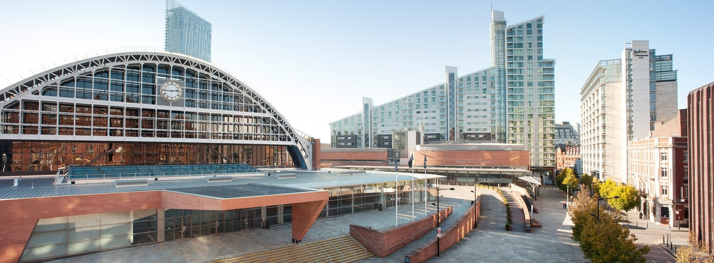

I feel like this isn't said enough and often underrated when its said - but everyone finds their true calling
For about 3 years after I left Goldman Sachs, I stayed in a jungle in the middle of Bangalore city. It's called Indian Institute of Science. This jungle has the most honest and down to earth people I have met. From staff to students, every single person here is driven in their own way to work towards something. I made some great friends, I dated my girlfriend, I found a hobby. Yet the thing I was there for a masters by research degress alluded me. As time wore on the scare of failure was as real as it got. "Research isn't a straight line" my advisor once said but it did come with an expiry date - 2.5 years. Cross that and you get half your stipend (aka pension) and half the respect. Moreover you don't believe you belong in this jungle if you can't do research. Once self-doubt creeps in, confidence and belief tank - it's like autumn waiting for winter to come - inevitable. I managed to submit a half baked work right at the end of the 3 year period.
Finding a job after being with a highly regarded advisor with his trophy cabinet of alumni was challenge 2. I hit bulls eye - Research Scientist at Intel. The rejected paper, after putting in some more effort along with my full-time work at Intel, eventually got accepted in a journal/conference. My work at Intel was with some of the best minds of the industry. They were the very top talents - giving key notes at conference and carving Intel's future strategy. I was travelling half way around the world in business class flights and private jets. I married my long time girlfriend and things were peachy.
Yet after 2 years at Intel, I decided to plunge back into the deluge from which I emerged. Schadenfreude is the term for taking pleasure in another person’s misery. But what about those who take pleasure in their OWN misery - masochist? romantic melancholic? Call me what you may, but
Twitter thread?? https://getchirrapp.com/
After grappling with a tough masters by research program at @IIScCSA,
I decided to plunge back into the deluge from which I emerged and pursue yet another
research based degree. This time a longer and tougher one, forfeiting a good position and pay at Intel. A thread
"Research isn't a straight line" my advisor at IISc once told me but it did come with an expiry date - 2.5 years. Cross that and you get half your stipend (aka pension) and half the respect. I took another 4 months after the 2.5 years to wrap up.
As time wore on the scare and panic of failure was as real as it got. Once self-doubt creeps in, confidence and belief tank - it's like autumn waiting for winter to come - inevitable.
Eventually after putting in more effort (along with my full-time work at Intel), my masters research was accepted in a journal. The feeling of euphoria and elation lasts for about half a day, compared to the 2 years of toil behind it.
Schadenfreude is the term for taking pleasure in another person’s misery. But what about those who take pleasure in their OWN misery - masochist? romantic melancholic? Call me what you may. So why did I decide to do it all over again?
Unfinished Business: IISc had instilled the thirst for success and defined the meaning of sucesss. To crack the tier-1 conference acceptance (with paper acceptance rates of ~20%). Yes I had faltered but not failed and I would not accept defeat.
Love for discovery: I learnt something along the way.
Support system: If like me, you are going to enter into a PhD in your late 20s, getting paid minimum wages might not cut it for long. Having a family support system goes a long way in ensuring you live to a decent standard of living. A huge credit to my working wife for encouraging me to take the leap knowing full well what it would entail financially and emotionally.
Exploring my own self:
Need for more infrastructure: IISc is undoubtedly the best in India (staff, facilities, peers) but to really crack the upper echelons of conferences requires more: More compute facilities, more support staff, more infrastructure! My first visit to an university outside India (ETH Zurich) left me shocked at the facilities they had compared to how I worked in IISc. It almost felt like I was boxing with one hand tied behind. I wanted to see what I could do with both my hands.
That feeling: Just like a drug addict, I came back for another shot of the "half day of euphoria". It's a feeling that is unparalleled.
← Back to Blogs
Why I went back for more - My PhD motivation story
adarshpatil
6th March 2019

Comments (1)
Soumik
May 30, 2018
Came to read the article, found a backlink to another page!